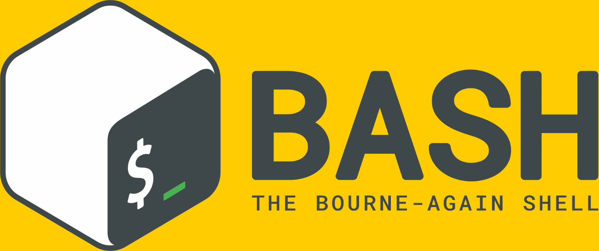

本系列文章都是来自自己多次阅读《Linux Shell 脚本攻略》第二版总结而来的，有能力的可以去购买最新第三版书籍进行研读，想必一定大有收获。

1. Shell 简述简介
通篇系列博客中均采用
Bash，它是目前大多数GUN/Linux系统默认的shell环境，所以大部分案例和讨论都是假定在此基础之上进行的。
[1] 用户分类
- **
$**表示的是普通用户 - **
#**表示管理员用户root
[2] shebang
shell脚本通常是以shebang起始的文本文件，如#!/bin/bash- 在
Unix的行话里，用sharp或hash来称呼#，用bang来成为！ /bin/bash表示Bash解释器命令的位置，当然也可以使用其他解释器Linux内核会自动读取首行并注意到#!/bin/bash，运行/bin/bash来执行脚本
[3] 运行方式
- 将脚本作为
bash的命令行参数bash script.sh
- 授予脚本执行权限，变成为可执行文件
- 相对路径
chmod a+x script.sh./script.sh
- 绝对路径
chmod a+x script.sh/home/path/script.sh
- 相对路径
2. 命令终端打印
终端是交互的工具，用户可以通过它来与
shell环境进行交互，打印是最为基础的任务了。
[1] echo 命令
- 使用规则
- 在默认情况下，
echo在每次调用后会添加一个换行符 - 使用不带引号的
echo时，无法在所要显示的文本中使用分号;，因为分号被用作命令定界符 - 使用双引号的时候，遇到特殊字符的时候需要转义字符
\进行转义，而在单引号中则不用 - 变量替换在单引号中无效，如
${username}等
- 在默认情况下，
- 转义字符
\a发出警告声\b删除前一个字符\c最后不加上换行符号\f换行但光标仍旧停留在原来的位置\n换行且光标移至行首\r光标移至行首，但不换行\t插入tab\v与\f相同\\插入\字符\nnn插入nnn（八进制）所代表的ASCII字符
- 常用选项
- 可以使用直接输出命令结果
- 可以使用
-n选项来忽略结尾的换行符 - 可以使用
-e选项在echo中转义换行符
- 打印彩色输出
- 文字闪动
0关闭所有属性1设置高亮度(加粗)2淡化3斜体4下划线5闪烁7反显8消隐
- 字的颜色
- 重置=0，黑色=30，红色=31，绿色=32，黄色=33，蓝色=34，洋红=35，青色=36，白色=37
- 背景颜色
- 重置=0，黑色=40，红色=41，绿色=42，黄色=43，蓝色=44，洋红=45，青色=46，白色=47
- 文字闪动
- 实例演示
[root@localhost] $ echo -e "\e[1;31mWord is red \e[0m"
Word is red
[root@localhost] $ echo -e "\e[1;42mthe background is green \e[0m"
the background is green
[root@localhost] $ echo -e "\e[1;42;31mWord is red, the background is green \e[0m"
Word is red, the background is green
[root@localhost] $ echo -e "\e[5;37;31mMySQL Server Stop...\e[0m"
MySQL Server Stop...
[root@localhost] $ echo -e "\e[4;37;31mMySQL Server Stop...\e[0m"
MySQL Server Stop...
[2] printf 命令
使用规则
- 在默认情况下，
printf并不像echo一样会自动添加换行符，必须手动添加
- 在默认情况下，
格式替换符
%s字符串%cASCII 字符%d十进制整数%f浮点数
对齐格式
-左对齐- 不指定，默认为右对齐
- 可以在对齐符号之后，添加数字，表示宽度
- 对于浮点数，可以使用其他参数对小数部分进行取舍，如
%-4.2f
实例演示
[root@localhost] $ printf "%-5s %-10s %-4.2f\n" 1 escape 100.123
1 escape 100.12
3. 变量和环境变量
变量是任何一种编程语言都必不可少的组成部分，用于存放各类数据。
- 在 Bash 中，每一个变量的值都是字符串
- 无论你给变量赋值时有没有使用引号，值都会是字符串的形式存储的
环境变量就是用来被 shell 环境和操作系统环境用来存储一些特殊值的变量
[1] 查看环境变量
- 所有与终端相关
env命令
- 对于进程而已
cat /proc/$PID/environ- 默认彼此之前由
\0分割，可以使用tr命令进行转换
[2] 使用变量
- 定义变量
var=value
- 使用变量
echo $varecho ${var}
[3] 添加 PATH 变量路径
PATH变量通常定义在/etc/envitonment或/etc/profile或~/.bashrc中export PATH="$PATH:/home/escape/bin"
[4] 变量的用途
- 获得字符串长度
length=$(#var)
- 识别当前所使用的
shellecho $SHELLecho $0
- 检查是否为超级用户
[ $UID -ne 0 ]
- 修改 Bash 提示符
echo $PS1PS1='${debian_chroot:+($debian_chroot)}\u@\h:\w\$'- 可以使用类似
\e[1;31的特定转义字符来设置彩色提示字符串
[5] 使用函数添加环境变量
- 把下面的函数加入
~/.bashrc中即可prepend() { [ -d "$2" ] && eval $1=\"$2':'\$$1\" && export $1; }- 判断第二个参数指定的目录是否存在
- 将第一个参数所指向的变量值设置成为第二个参数的值加上
:$1的形式 - 设置为环境变量
- 使用方法
prepend PATH /opt/myapp/bin
- 改进方案
prepend() { [ -d $2 ] && eval $1=\"$2\$\{$1+':'\$$1\}\" && export $1; }- 其中
$1不为空的时候使用表达式':'\$$1 $$1表示第一个参数的实际值
[6] 实例演示
[root@localhost] $ pgrep gedit
12501
[root@localhost] $ cat /proc/12501/environ
[root@localhost] $ cat /proc/12501/environ | tr '\0' '\n'
[root@localhost] $ count=5
[root@localhost] $ fruit=apple
[root@localhost] $ echo "We hava $count ${fruit}(s)"
We have 5 apple(s)
[root@localhost] $ echo '$var' will print $var
$var will print $var
[root@localhost] $ echo $PATH
/usr/local/var/pyenv/shims:/usr/local/bin
[root@localhost] $ export PATH="$PATH:/home/escape/bin"
[root@localhost] $ PATH="$PATH:/home/escape/bin"
[root@localhost] $ export PATH
[root@localhost] $ echo $PS1
${ret_status} %{$fg[cyan]%}%c%{$reset_color%} $(git_prompt_info)
4. 进行数学运算
在
Bash shell环境中，可以使用let、(())、[]执行基本的算术操作，使用expr和bc可以进行高级操作
[1] 基本算数
- let
let result=num1+num2let num++let num--let num+=5let num-=5
- $(())
result=$((num1+num2))result=$(($num+5))
- $[]
result=$[ num1+num2 ]result=$[ $num+5 ]
[2] 高级算数
- expr
- result=
expr 3+4 result=$(expr $num+5)
- result=
- bc
- 普通用法
echo "4 * 0.56" | bc - 设定小数精度
echo "scale=2; 3/8" | bc - 十进制转二进制
echo "obase=2; $num" | bc - 二进制转十进制
echo "obase=10; ibase=2; $num" | bc - 平方根
echo "sqrt(100)" | bc - 计算平方
echo "10^10" | bc
- 普通用法
5. 脚本判断条件
写好 shell 脚本需要熟悉下面的判断条件和规则
- [1] 逻辑判断
| 逻辑表达式 | 表达式解释说明 |
|---|---|
! |
逻辑非 |
-a |
逻辑且 |
-o |
逻辑或 |
- [2] 语句判断
| 判断语句 | 语句解释说明 |
|---|---|
[-e file] |
如果 file 文件存在则为真 |
[-d file] |
如果 file 存在且是一个目录则为真 |
[-f file] |
如果 file 存在且是一个普通文件则为真 |
[-b file] |
如果 file 存在且是一个块特殊文件则为真 |
[-s file] |
如果 file 存在且大小不为 0 则为真 |
[-c file] |
如果 file 存在且是一个字特殊文件则为真 |
[-h file] |
如果 file 存在且是一个符号连接则为真 |
[-p file] |
如果 file 存在且是一个名字管道则为真 |
[-r file] |
如果 file 存在且是可读的则为真 |
[-w file] |
如果 file 存在且是可写的则为真 |
[-x file] |
如果 file 存在且是可执行的则为真 |
[-L file] |
如果 file 存在且是一个符号连接则为真 |
[-S file] |
如果 file 存在且是一个套接字则为真 |
[-O file] |
如果 file 存在且属有效用户 ID 则为真 |
[-G file] |
如果 file 存在且属有效用户组则为真 |
[-t FD] |
如果文件描述符 FD 打开且指向一个终端则为真 |
[-u file] |
如果 file 存在且设置了 SUID(用 chmod u+s 设置)则为真 |
[-g file] |
如果 file 存在且已经设置了 SGID(用 chmod g+s 设置)则为真 |
[-k file] |
如果 file 存在且已经设置粘制位(用 chmod a+t 设置)则为真 |
- [3] 条件表达式
| 条件表达式 | 表达式解释说明 |
|---|---|
[string] |
string 的长度为非零 non-zero 则为真 |
[-n string] |
string 的长度为非零 non-zero 则为真 |
[-z string] |
string 的长度为零则为真 |
[sting1==string2] |
如果 2 个字符串相同则为真 |
[string1!=string2] |
如果 2 个字符串不相等则为真 |
[string1 –eq string2] |
等于为真 |
[string1 -ne string2] |
不等于为真 |
[string1 -le string2] |
小于为真 |
[string1 –gt string2] |
大于为真 |
[string1 –ge string2] |
大于等于为真 |
[file1 –nt file2] |
如果 file1 比 file2 要新或者 file1 存在且 file2 不存在则为真 |
[file1 –ot file2] |
如果 file1 比 file2 要老或 file2 存在且 file1 不存在则为真 |
[file1 –ef file2] |
如果 file1 和 file2 指向相同的设备和节点号则为真 |